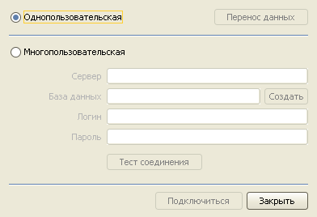
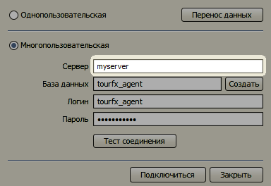
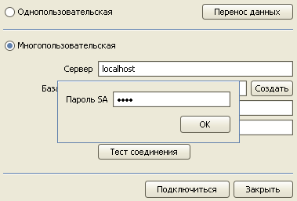
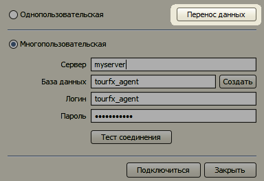
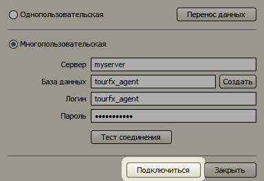

Переход на многопользовательскую версию
Для переноса данных необходимо выполнить следующие действия:
Установите и настройте SQL сервер по инструкции.
Запустите программу в однопользовательской версии.
Откройте форму "Базы данных" в меню Настройки.

Выберите переключатель Многопользовательская.

В поле Сервер введите название компьютера, на котором установлен SQL Server.

Нажмите кнопку "Создать" и в появившемся окне введите пароль SA. Программа создаст необходимые базы данных на SQL-сервере.

Нажмите кнопку "Перенос данных". Начнется процесс перемещения данных из однопользовательской БД в многопользовательскую.

Нажмите кнопку "Подключиться".

Остались вопросы? Напишите нам на e-mail